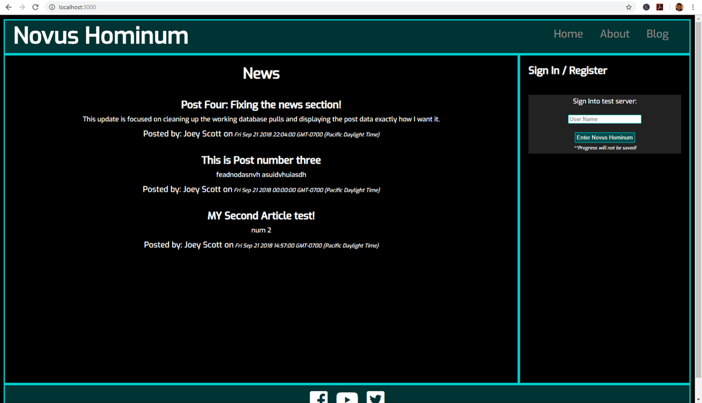
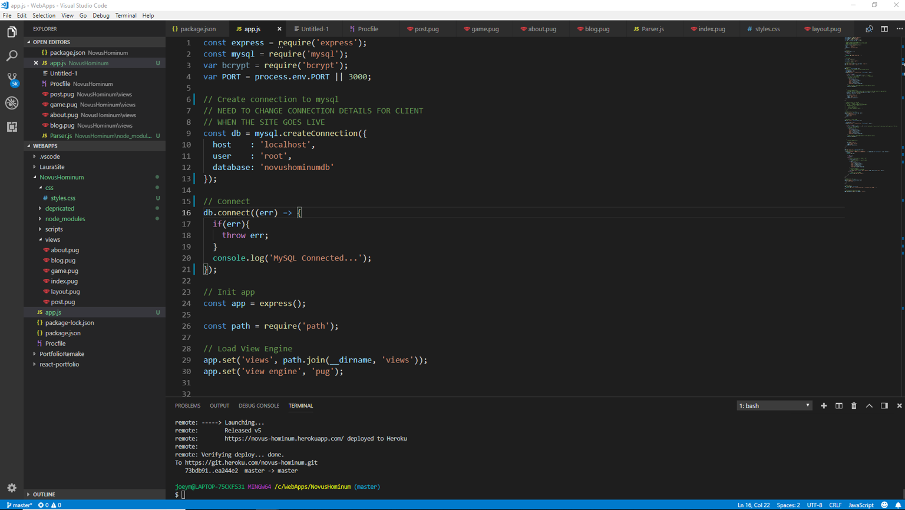
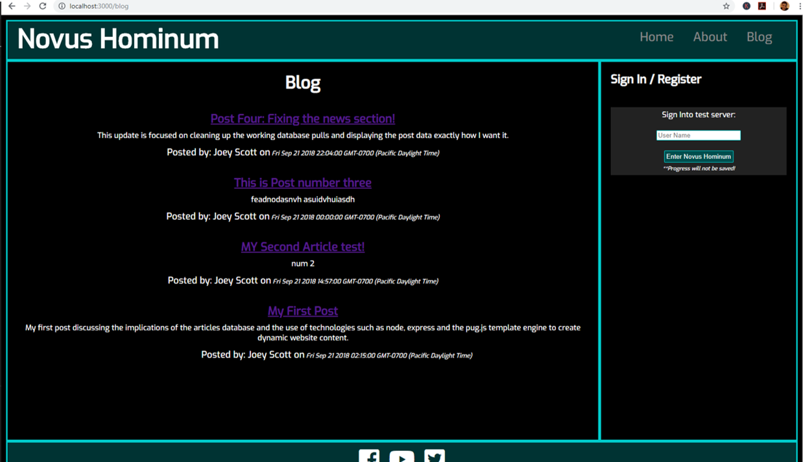
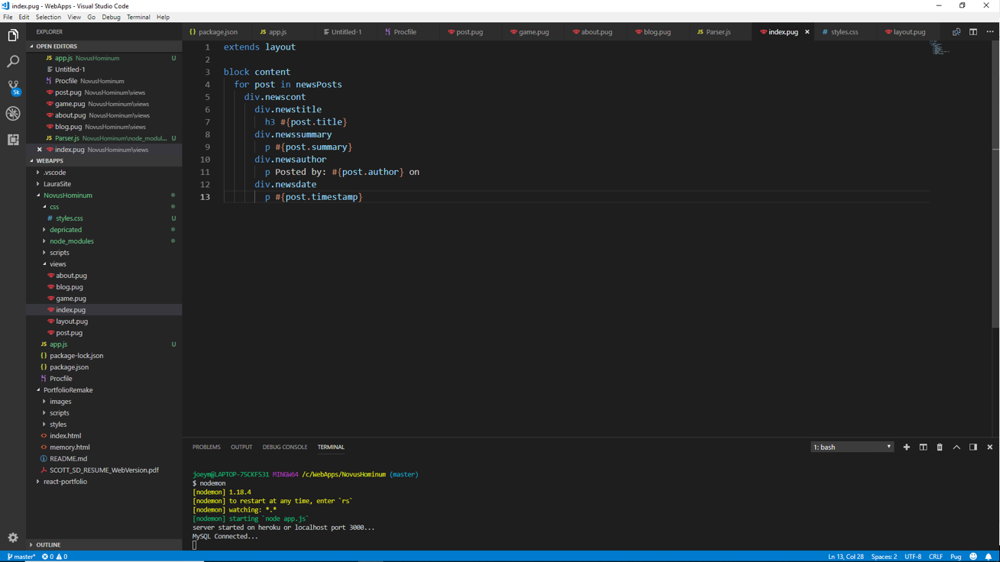

For this project I needed something that would round out my skills and give me some experience with tying a website together to a backend. I researched a bit and decided to stick with technology that would keep me working with JavaScript. The tech I found was Node.js. Node.js is a framework which offers a JavaScript solution to a server environment.
I started to create my app using the Express.js module to create my routes. I then used the included markup templating engine, pug.js (formerly known as Jade) to create my markup. I also began setting up a local MySQL database using XAMPP and MyPhpAdmin. I first created a table to hold blog posts in the database and created the MySQL connection with JavaScript using the node.js included MySQL module.
I created some test posts within the database to display on my page and segmented my HTML templates with one overall layout and all other pages extending that layout. From there I started to add the SQL queries to pull all the articles from the database, store them into a temporary array of objects. I then manipulated the array as I needed. For example, on the home route of the website I want the most recent three posts to be shown. So I sliced the array using the JavaScript array.slice() function then I reversed the array using the array.reverse() function. I used that to display a news section and for the actual Blog page I just reversed the order of the posts by looping through the query in reverse instead of just calling the array.reverse() function again.
Unfortunately, this application isn’t finished yet as I am also working on a register/login section using the bcrypt.js module. I will continue to update this section as I get closer to completion.
